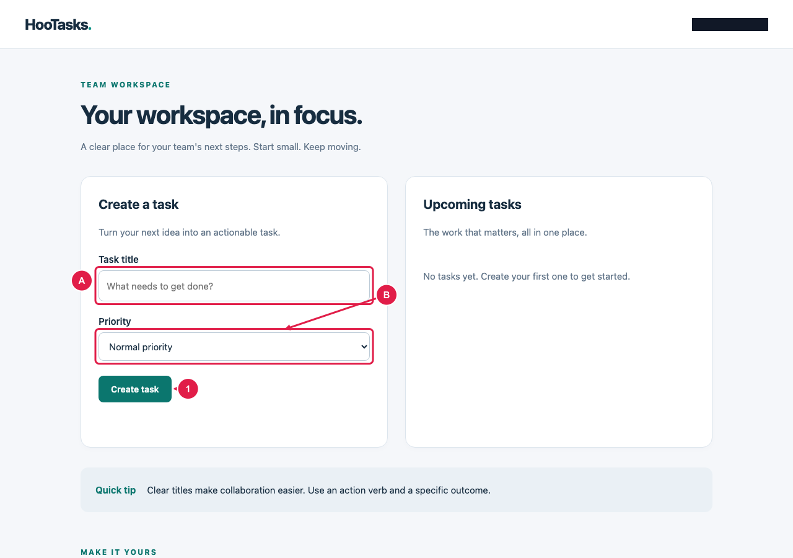
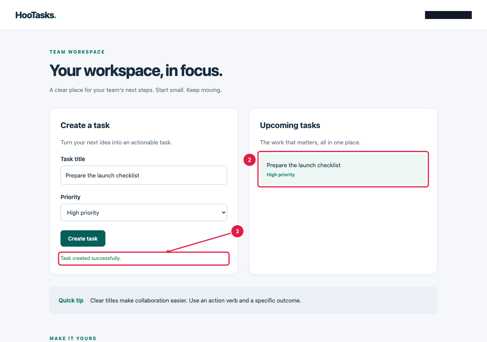
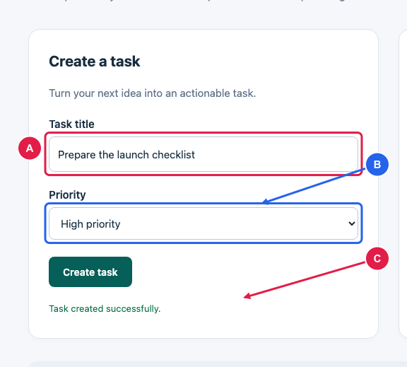
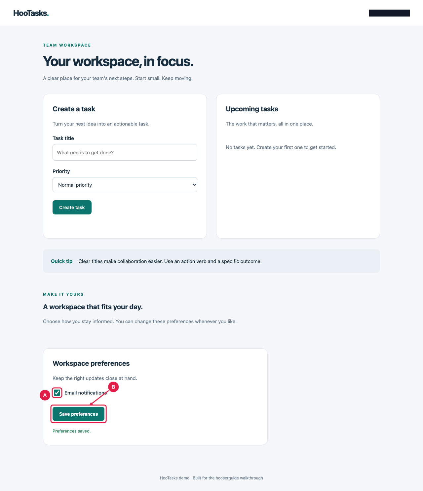

HooTasks — Benutzerhandbuch
Aufgaben anlegen, organisieren und Ergebnisse prüfen.
2 Kapitel · chromium
Keine passenden Kapitel.
Die erste Aufgabe anlegen
HooTasks hält die Arbeit Ihres Teams übersichtlich. Legen Sie Aufgaben an, prüfen Sie das gespeicherte Ergebnis und passen Sie Ihre Einstellungen an.
Voraussetzungen
- Öffnen Sie Ihren Arbeitsbereich mit der Berechtigung, Aufgaben anzulegen.
- Geben Sie einen eindeutigen Aufgabentitel ein und wählen Sie die Priorität.
- Wählen Sie Create task. Prüfen Sie, ob die Aufgabe in der Liste und eine Bestätigung erscheinen.


Aufgabendetails ausfüllen
A bezeichnet den Titel, B die Priorität. Wählen Sie Create task zum Speichern.
- A Geben Sie der Aufgabe einen aussagekräftigen Titel.
- B Wählen Sie eine passende Priorität für Ihr Team.
- 1 Speichern Sie die neue Aufgabe.


Gespeicherte Aufgabe prüfen
Die Aufgabe erscheint im Arbeitsbereich. Die Bestätigung zeigt den erfolgreichen Speichervorgang.
- 2 Die neu angelegte Aufgabe.
- 3 Bestätigung des erfolgreichen Speicherns.


Aufgabenformular im Detail
Die Detailansicht hält das Formular lesbar und vergibt Referenzen automatisch.
- A Der Aufgabentitel.
- B Die gewählte Priorität.
- C Die Speicherbestätigung.
Benachrichtigungen anpassen
HooTasks hält die Arbeit Ihres Teams übersichtlich. Legen Sie Aufgaben an, prüfen Sie das gespeicherte Ergebnis und passen Sie Ihre Einstellungen an.
- Öffnen Sie Workspace preferences, aktivieren Sie Email notifications und wählen Sie Save preferences.


Einstellungen des Arbeitsbereichs
Die Einstellungen befinden sich unten im Arbeitsbereich. Lange Screenshots bleiben über mehrere PDF-Seiten lesbar.
- A Schalten Sie Benachrichtigungen ein oder aus.
- B Speichern Sie Ihre Einstellungen.